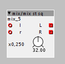
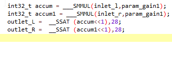

I am trying to code a Stereo mixer....

my code looks like this:

console says:
! C:\Users\Philoop\DOCUME~1\axoloti/build/xpatch.h.gch
C:\Users\Philoop\DOCUME~1\axoloti/build/xpatch.cpp:2993:46: error: macro "__SSAT" requires 2 arguments, but only 1 given
outlet_L[buffer_index] = __SSAT (accum< ^
C:\Users\Philoop\DOCUME~1\axoloti/build/xpatch.cpp:2994:47: error: macro "__SSAT" requires 2 arguments, but only 1 given
outlet_R[buffer_index] = __SSAT (accum1< ^
C:\Users\Philoop\DOCUME~1\axoloti/build/xpatch.cpp: In member function 'void rootc::instancemix__5::dsp(const int32_t*, const int32_t*, int32_t (&)[16], int32_t (&)[16], int)':
C:\Users\Philoop\DOCUME~1\axoloti/build/xpatch.cpp:2993:30: error: '__SSAT' was not declared in this scope
outlet_L[buffer_index] = __SSAT (accum< ^
C:\Users\Philoop\DOCUME~1\axoloti/build/xpatch.cpp: In member function 'void rootc::instancepatcher__4::instanceclock__1::dsp(int32_t, int32_t, int32_t&, int32_t&, int32_t&, int)':
C:\Users\Philoop\DOCUME~1\axoloti/build/xpatch.cpp:3806:24: warning: integer overflow in expression [-Woverflow]
_posfrac &= (1<
Can somebody help me please?
^